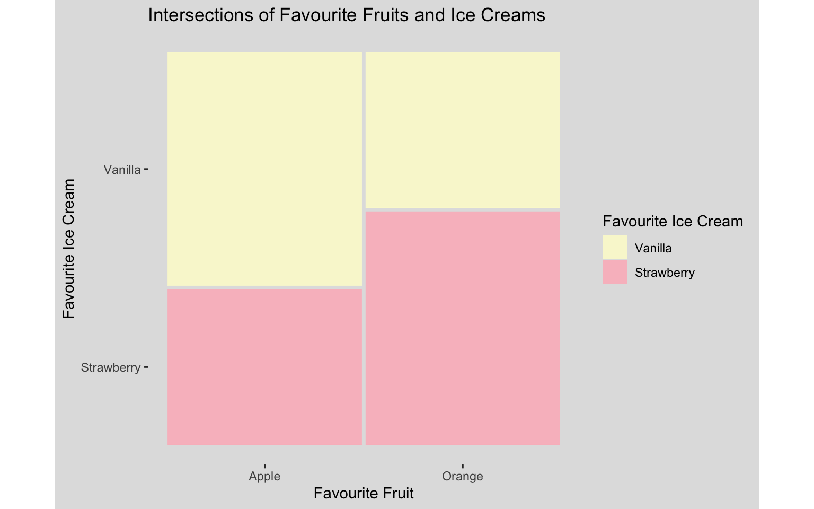

3 Methodology
3.1 Research Aims
What does it mean for a panel to be “good” at being representative and are we achieving this? - Are current methods and algorithms, like LexiMin, performing the best they could be? - How do unobserved/unfiltered traits affect response rates, and therefore panel composition and representativeness? - How can survey non-response and other sampling-level issues bias representativeness?
nDF suggests 10x response to panel count; not generally feasibly, more often get 3x. How much of a difference does this make to burden and selection likelihood?
3.2 Research Design
Simulation design
This thesis investigates the impacts of data complexity and construction on algorithmic performance. To test this, populations of varying intersectional complexity (three and five categories) and varying associations (independent and associated) were simulated. Categories used were inspired by demographic variables often used for sortition in industry. In the three categorical variable case, these were age (taking values of 18-34, 35-44, 45-54, 55-64, 65+), gender (taking values of male, female, non-binary) and tenure (taking values of rent, own, other). The five variable case took the initial three variables from the previous case, but then also added the variables education (no qualification, secondary, bachelor, postgraduate) and location (metro, regional, remote). The combinations of these variables were then used to produce the simulated datasets for the panel sampling process.
To illustrate the general procedure concretely at a minimal scale, a simplified two-variable example was constructed using only age and tenure. Age is denoted A, taking one of L_A = 5 ordered levels a \in \{1, \dots, 5\} (18-34 through 65+), as previously stated, and tenure is denoted T, taking one of L_T = 3 levels t \in \{1, \dots, 3\} (Rent, Own, Other). Marginal probability vectors were first defined for each variable,
\mathbf{p}_A = \left(p_{A_1}, \dots, p_{A_5}\right), \qquad \mathbf{p}_T = \left(p_{T_1}, p_{T_2}, p_{T_3}\right), \qquad \sum_{a=1}^{5} p_{A_a} = 1, \qquad \sum_{t=1}^{3} p_{T_t} = 1,
with \mathbf p_A = (0.15, 0.20, 0.25, 0.25, 0.15) specified as a mild skew toward the upper-middle age brackets, and \mathbf p_T = (0.30, 0.50, 0.20) specified with a moderate skew toward home ownership. The same marginal targets \mathbf p_A and \mathbf p_T are used for both the independent and associated populations described below, so that any difference between them is attributable solely to the association introduced, rather than to a difference in either variable’s marginal distribution.
An independent population (sim_data2) was generated by taking the outer product of these two marginals to form a joint probability array,
P^{(0)}(a, t) \;=\; p_{A_a} \, p_{T_t}, \qquad \mathbf{P}^{(0)} \;=\; \mathbf{p}_A \mathbf{p}_T^\top \;\in\; \mathbb{R}^{5 \times 3},
a 5 \times 3 matrix whose row sums equal \mathbf p_A and column sums equal \mathbf p_T by construction, so that A \perp T. This array was flattened into a probability vector and cell counts were drawn from a single multinomial trial before being expanded into individual-level records, as described in full below.
A second, associated population (sim_data2_cov) was then generated using the same marginal targets, but with a negative association deliberately introduced between age and renting. This required an ordinal score for age,
s(a) = \frac{a - 1}{5 - 1} \in [0, 1],
running from 0 for the youngest bracket to 1 for the oldest, which was used to seed the independent array \mathbf P^{(0)} with an exponential adjustment factor targeting only the “Rent” level of tenure,
\tilde{P}(a, t) \;=\; P^{(0)}(a, t) \cdot \exp\!\Big(-\alpha \, s(a) \cdot \mathbb{1}[t = \text{Rent}]\Big), \qquad \alpha = 1.2,
so that the probability of renting is scaled down by a factor of e^{-\alpha s(a)} that grows with age, while the probability of owning or other tenure is left unchanged. Because this adjustment is applied only to the “Rent” column, the row and column sums of \tilde{\mathbf P} no longer equal \mathbf p_A and \mathbf p_T, so the array was subsequently rescaled through iterative proportional fitting (raking) so that the age and tenure marginals were restored exactly to their specified targets. Initialising P^{(0)}_{\text{rake}} = \tilde P, each raking iteration r = 0, 1, 2, \dots performs two rescaling passes,
P^{(r + 1/2)}(a, t) \;=\; P^{(r)}_{\text{rake}}(a, t) \cdot \frac{p_{A_a}}{\sum_{t'} P^{(r)}_{\text{rake}}(a, t')}, \qquad P^{(r+1)}_{\text{rake}}(a, t) \;=\; P^{(r+1/2)}(a, t) \cdot \frac{p_{T_t}}{\sum_{a'} P^{(r+1/2)}(a', t)},
first rescaling every row to sum to p_{A_a}, then every column to sum to p_{T_t}. Repeating this pair of passes for R = 100 iterations (well past convergence for a 5 \times 3 table) yields the raked array P^\star, satisfying
\sum_{t} P^\star(a, t) = p_{A_a} \; \text{ for all } a, \qquad \sum_{a} P^\star(a, t) = p_{T_t} \; \text{ for all } t,
to numerical tolerance, while retaining the negative age-renting association introduced by the exponential seeding step – this is the sense in which raking restores the specified marginals while preserving the association structure introduced by the adjustment.
Both populations were sampled the same way, differing only in which array was used. The relevant array (\mathbf P^{(0)} for the independent case, or the raked P^\star for the associated case) was flattened into a probability vector \mathbf p^\star \in \mathbb R^{15} (age varying fastest), and cell counts were drawn from a single multinomial trial,
(n_1, \dots, n_{15}) \sim \text{Multinomial}\!\left(n_{\text{total}}, \, \mathbf p^\star\right), \qquad n_{\text{total}} = 100{,}000,
with each cell j, corresponding to one (a, t) combination, expanded into n_j individual-level records sharing that age and tenure. Comparing the two resulting populations demonstrates the core logic of the simulation framework in its simplest form: a chi-squared test of association between age and tenure is non-significant in the independent population but highly significant in the associated population, with the conditional probability of renting falling steadily from around 44% among 18-34 year olds to around 18% among those aged 65 and over, even though both populations share identical marginal distributions for age and tenure individually. This confirms that the seeding-and-raking procedure successfully introduces a targeted association between variables without disturbing their overall marginal proportions. This will allow for testing of the algorithm’s ability to preserve sample intersection structures, beyond a purely marginal level.
Both populations also include an additional binary variable, generated independently of age and tenure for each simulated individual i via
Z_i \;\overset{\text{i.i.d.}}{\sim}\; \text{Bernoulli}(0.5),
drawn after the population has been expanded to individual level, so that Z_i is uncorrelated with age and tenure by construction. This variable is deliberately excluded from all visualisations, representing an unobserved (latent) trait whose presence is known to the simulation but not exposed to any downstream algorithm. This was used to test whether unobserved traits can bias panel composition even when they play no role in the population’s observed demographic structure.
Next, as is standard in practice, a random slice of defined proportions (in this case 10%) is taken from the population, to be used as the survey sample, from which responses are drawn. Concretely, from a population of n_{\text{total}} individuals, a survey sample \mathcal{S} of size n_{\mathcal S} = \lfloor 0.10 \, n_{\text{total}} \rceil (so n_{\mathcal S} = 10{,}000 for the two-variable example, drawn uniformly at random without replacement) is taken as the pool of individuals invited to respond, before any response behaviour is simulated. Whether each invited individual i \in \mathcal S actually responds is then modelled as an independent Bernoulli trial,
R_i \;\overset{\text{ind.}}{\sim}\; \text{Bernoulli}(\pi_i),
where the response probability \pi_i is assigned according to one of three cases, mirroring the independent, observed-trait, and latent-trait cases described above for the population itself.
In the independent case, every invited individual is equally likely to respond regardless of their trait profile,
\pi_i = \pi_0, \qquad \pi_0 = 0.30,
providing a baseline against which the effects of differential response can be compared – a chi-squared test confirms no significant association between A and R under this case, as expected. In the age-covaried case, response likelihood increases with age, reusing the same ordinal score s(a) defined above,
\pi_i = \pi_1 \exp\!\big(\alpha_R \, s(a_i)\big), \qquad \pi_1 = 0.20, \quad \alpha_R = 1.0,
so that the response rate rises from around 20% among the youngest bracket to over 50% among the oldest, and the association between A and R is now highly significant. In the latent-covaried case, response likelihood instead increases with the unobserved trait Z_i rather than with any observed trait,
\pi_i = \pi_1 \exp\!\big(\alpha_Z \, Z_i\big), \qquad \pi_1 = 0.20, \quad \alpha_Z = 0.8,
giving a response rate of approximately 20% for Z_i = 0 and 44% for Z_i = 1. Critically, while the association between Z and R is highly significant under this case, the association between A (or T) and R remains non-significant, exactly as it was in the independent case. This is the central diagnostic point of the latent-covaried case: an unobserved trait can systematically bias who responds to a survey, and therefore who is available for panel selection, without ever manifesting as a detectable association in any of the demographic variables an algorithm can actually observe.
Visualisation methods
In order to read the later mosaic plots, a simpler plot can first be introduced.